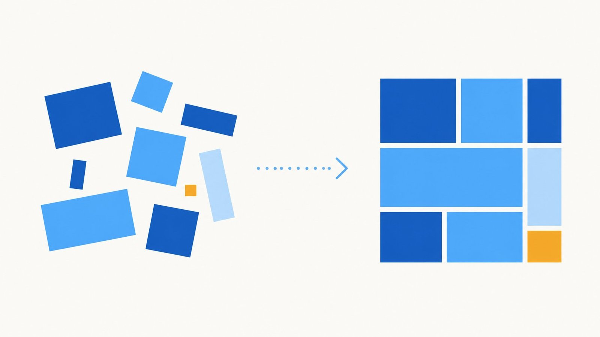
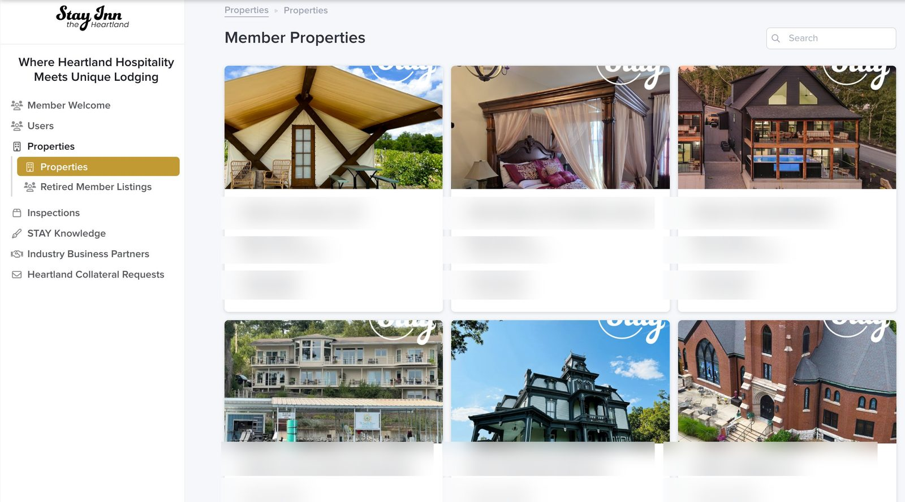
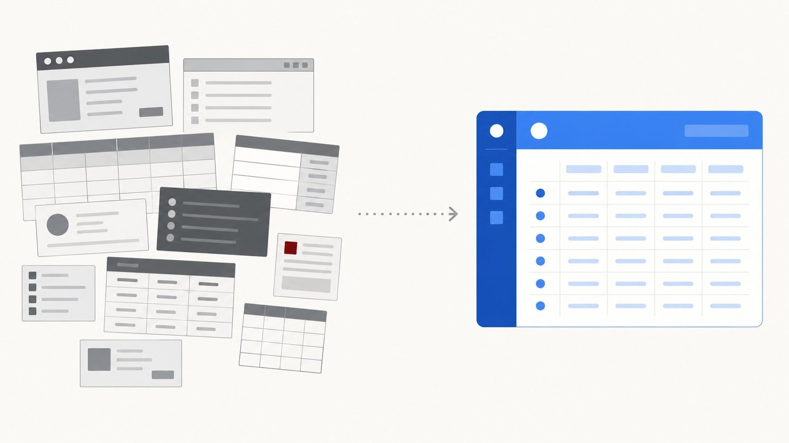
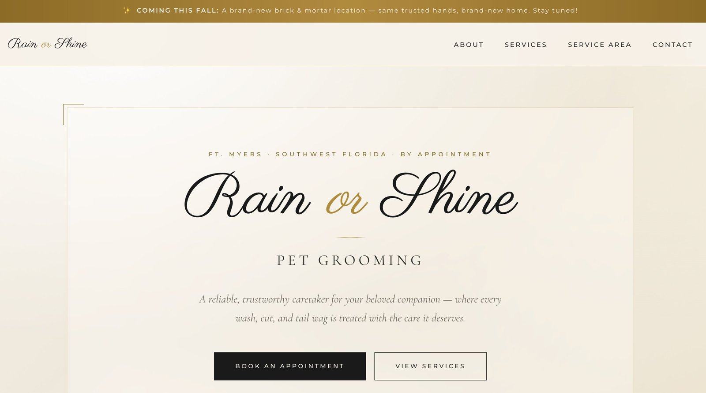

Work
A few of the projects I'm proud of, with screenshots, what we built, and what it's doing now.
Complex System · Stay INN the Heartland

Stay INN the Heartland (a 501(c)(3) community of independently owned lodging properties committed to quality) ran its whole membership process out of a shared Google doc. Nothing was technically falling apart — but keeping it that way took constant back-and-forth. Every new member, every inspection, every approval meant someone re-reading the doc and chasing down what still needed to happen. Inspections especially were a lot to track by hand.
A custom membership system on Airtable and Stacker that takes a property from purchase to approval without anyone holding the whole process in their head. A new member buys through Shopify, and the system creates their user and property record automatically. The owner fills in their own property details. Those get reviewed, the property gets inspected against a defined checklist, and once it passes, the board approves it — each step visible, each handoff tracked.

Airtable holds the data and runs the automations. Stacker puts a clean, role-aware interface on top of it — which mattered here, because the organization has several kinds of people touching the system: board members, inspectors, and property owners, each of whom should see and do different things. Role-based permissions mean an inspector sees what an inspector needs, an owner sees only their own property, and the board sees the whole picture.
They went from a disjointed process held together by notes and reminders to a streamlined system where the routine communication runs automatically. People are still in charge of the judgment calls — reviewing and approving is a human decision, and it should be — but the busywork around those decisions mostly takes care of itself now. The system tracks a growing roster of around twenty member properties.
This wasn't a build-it-and-leave job. The most recent upgrade added support for a single owner managing multiple locations under one account — the kind of change that comes up only once a system is real and in daily use. That ongoing relationship is how I prefer to work: build it right, then stick around as the organization grows into it.
For years we ran our membership and inspections off a shared document and a lot of hoping nothing slipped through. Lee built us a system that just handles it — new members, their properties, inspections, board approvals, all in one place, each person seeing exactly what they need to. It took the constant follow-up off our plate, and when we needed it to do something new, he was right there to build it.
Does your organization put people or members through a defined process? Onboarding, applications, inspections, approvals, renewals — anything with steps, handoffs, and people who each need their own view of it. That's exactly the kind of thing a custom system can take off your plate. Tell me what your process looks like →
Simple Build · Drywall contractor

A drywall and construction contractor — about ten people — was running materials inventory out of a Microsoft Access 2003 system propped up by a scattering of separate spreadsheets. It worked, in the sense that the information existed somewhere. But "somewhere" meant several different places, in software older than some of the crew, and nobody could get a clean picture of what they actually had on hand without opening three things.
I rebuilt the whole thing as a single Airtable system that mirrors how they actually work. When a job comes in, they pull up the materials list, check it against current inventory, and generate a pick list for the warehouse plus an order list for whatever's short. When a job wraps, leftover materials go back to the warehouse and get added back into the system. And when they take a physical count, they check it against the same source of truth. One place for all of it.
The win here isn't a clever feature — it's consolidation. Instead of jumping between an aging database and a handful of spreadsheets, everything lives in one organized, easy-to-use place. The whole build took about five hours. Sometimes the most valuable thing I can do isn't inventing something new; it's taking the tangle a business has already outgrown and making it one clean thing.
This one was straightforward, and that's the point. They didn't need new software with a learning curve — they needed the tools they were already wrestling with replaced by one place that just works. About five hours of build, and a process that used to span an old database and a stack of spreadsheets now lives in a single system anyone on the team can use.
Still running your business out of a spreadsheet that's gotten away from you? Or worse, several of them, plus some software from a few versions of Windows ago? That's the most common thing I fix. Tell me what you're juggling →
Simple Build · Rain or Shine Pet Grooming

A solo pet groomer working out of multiple locations, by appointment, with no website at all. For someone whose whole business runs on staying connected to her clients — and who's working toward opening her own shop down the road — having no home base online was the gap. Word of mouth only gets you so far when there's nowhere to send people.
A clean, polished website that looks like the kind of business she's building toward — services, service area, an easy way to book, and a clear way for current clients to keep up with her. It's a fast, lightweight site hosted on Netlify, so it loads quickly and there's very little that can break. No bells and whistles she doesn't need; just a solid, professional presence that does its job. When she's ready to announce the new brick-and-mortar location, the site's already there to carry the news.
This is the kind of build I like: get it right, keep it simple, and be easy to reach when something needs to change. She sends an idea, I turn it into reality — usually quickly. No tickets, no runaround, no learning a new system on her end. Just the person who built it, on call to keep it current as her business grows.
Super fast and responsive, quality work, and easy to get my ideas turned into the real thing. I describe what I want and it just happens — I don't have to figure out the tech side at all.
Need a clean, professional site without becoming your own webmaster? I build it, host it, and stay on call to keep it current — so you can run your business instead of wrestling with a website. Tell me what you have in mind →